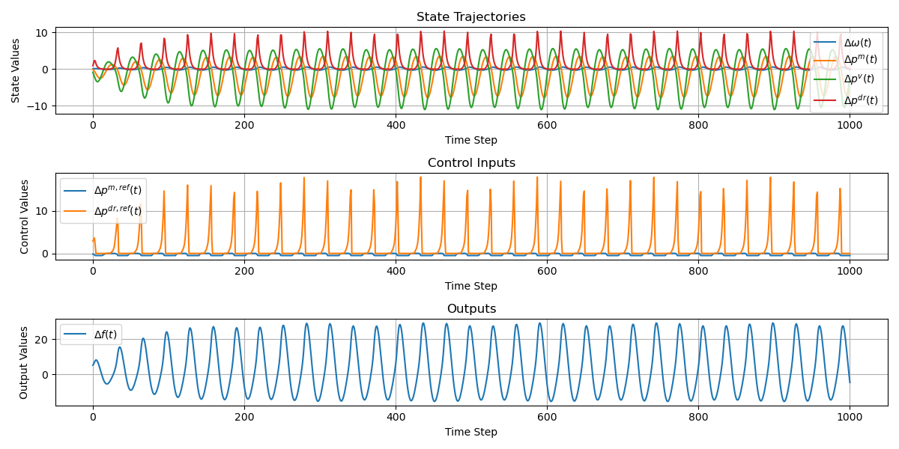

For the full problem definition, please see: Assignment
The challenge is to design an MPC-based controller for maintaining the stability of an electricity grid that uses renewables for generation.
The system block diagram is given as the following:

The given state-space prediction model is:
$$ \frac{d}{dt} \begin{pmatrix} \Delta \omega(t)\\ \Delta p^m(t)\\ \Delta p^v(t)\\ \Delta p^{dr}(t) \end{pmatrix} = \begin{pmatrix} -D/M & 1/M & 0 & 1/M\\ 0 & -1/T^t & 1/T^t & 0 \\ -1/(R\cdot T^g) & 0 & -1/T^g &0 \\ 0 & 0 & 0 & -1/T^{dr} \end{pmatrix} \begin{pmatrix} \Delta \omega(t)\\ \Delta p^m(t)\\ \Delta p^v(t)\\ \Delta p^{dr}(t) \end{pmatrix} + \begin{pmatrix} 0 & 0\\ 0 & 0\\ 1/T^g & 0\\ 0 & 1/T^{dr} \end{pmatrix} \begin{pmatrix} \Delta p^{m, ref}(t) \\ \Delta p^{dr, ref}(t) \end{pmatrix} + \begin{pmatrix} -1/M\\ 0\\ 0\\ 0 \end{pmatrix} \Delta p^{load}(t) $$
$$ \Delta f(t) = \begin{pmatrix} 50 & 0 & 0 & 0 \end{pmatrix} \begin{pmatrix} \Delta \omega(t)\\ \Delta p^m(t)\\ \Delta p^v(t)\\ \Delta p^{dr}(t) \end{pmatrix} $$
Within the controller, the Q and R matrices prioritize different states or inputs as part of the optimization procedure, and changing the prediction horizon N alters how far ahead the controller optimizes.
First attempt at the unconstrained controller
$$ Q = \begin{pmatrix} 1 & 0 & 0 & 0\\ 0 & 1 & 0 & 0\\ 0 & 0 & 1 & 0\\ 0 & 0 & 0 & 1 \end{pmatrix} \cdot \begin{pmatrix} \Delta \omega(t)\\ \Delta p^m(t)\\ \Delta p^v(t)\\ \Delta p^{dr}(t) \end{pmatrix} $$
$$ R = \begin{pmatrix} 1 & 0\\ 0 & 1 \end{pmatrix} \cdot \begin{pmatrix} \Delta p^{m, ref}(t) \\ \Delta p^{dr, ref}(t) \\ \end{pmatrix} $$
The first attempt at tuning the constrained controller yields the following output:
This was achieved with matrices Q and R:
$$ Q = \begin{pmatrix} 0.0001 & 0 & 0 & 0\\ 0 & 0.0001 & 0 & 0\\ 0 & 0 & 0.00001 & 0\\ 0 & 0 & 0 & 0.0000001 \end{pmatrix} $$
$$ R = \begin{pmatrix} 4 & 0\\ 0 & 0.05 \end{pmatrix} $$